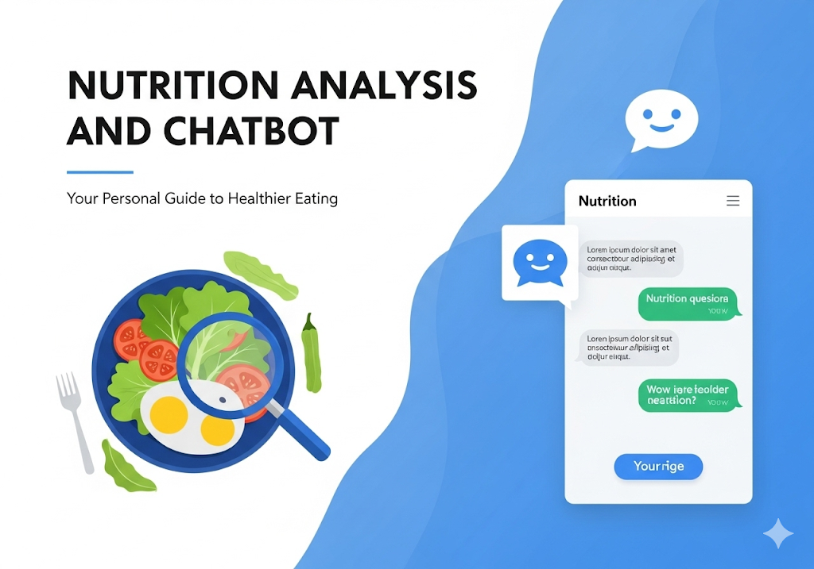

Projects
A selection of my recent works

Mobile Price Prediction
Data-driven analysis of mobile phone market trends.

Stock Price Prediction App
A Model based on Stacked LSTM that performs stock price prediction

Sentiment Analysis: Online Course Reviews
A comparitive analysis of different ML algorithms for sentiment analysis

NutriChat: Nutrition Analysis and Assistant
Interactive diet anlysis and an Interactive chatbot for diet plans and many more.